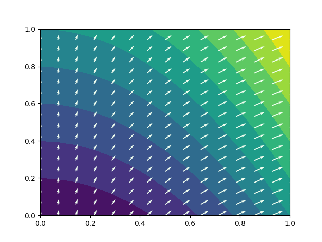
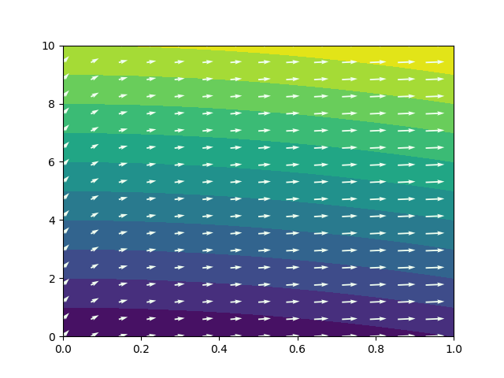

Visualization Of Gradient Fields
Table of Contents
I've decided to write this article because I've encountered a number of problems while trying to visualize gradients as arrow fields in a 2 dimensional plot. Some of these were problems related with me not using correctly certain python libraries and others were concerned with some unexpected geometry scaling.
A few thing to do when using matplotlib and numpy to compute and plot gradient fields
First let's discuss how to use correctly use matplotlib and numpy to compute and plot a two dimensional gradient field.
We are going to discuss an example where we want to plot the function \(z(x,y) = x^2 +y\) as level curves and also it's gradient fields.
To plot two dimensional functions we usually have to use the numpy.meshgrid function.
However, calling this function in the default way, it returns first \(y\) and then \(x\).
To prevent this behavior we have to use the argument indexing='ij'.
We are going to use the numpy.gradients function to compute the gradients, which uses finite differences.
A default call to this function only requires the \(x,y,z\) values and it is going to assume the finite differences step.
It is important to provide the \(dx\) and \(dy\) values in order to compute the correct gradients.
The last problem appears when trying to plot the gradients as arrows using the matplotlib.pyplot.quiver.
It is essential to set the following function arguments angles='xy', scale_units='xy', scale=1 to tell matplotlib that we want our gradients to be plotted in the correct coordinate system.
The scale parameter is going to scale the lengths of the arrows inversely and can be adjusted as needed.
Here we have the code for the completed process of the computation of function \(z\), its gradients and also the visualization.
Note all the parameters that we have to introduce to get the expected result.
import matplotlib.pyplot as plt import numpy as np x_values = np.linspace(0, 1, 15) y_values = np.linspace(0, 1, 15) X, Y = np.meshgrid(x_values, y_values, indexing='ij') Z = X**2 + Y dx = x_values[1] - x_values[0] dy = y_values[1] - y_values[0] grad_x, grad_y = np.gradient(Z, dx, dy) plt.contourf(X, Y, Z, levels=10) # Plot the color map with level curves plt.quiver(X, Y, grad_x, grad_y, color='honeydew', angles="xy") # Plot the gradient field plt.show()

The geometry problem
With this, we have seemingly been able to compute the gradients and plot them correctly. However if we make the same plot but with a different domain \(x\in [0,1]\), \(y\in [0,10]\) we get the figure:

The thing with this result, is that the gradient field is not perpendicular to the level curves, as we would expect. This happens because now that we have changed the domain, we have a \(y\) axis which has been compressed to fit 10 units in the size of 1. Consequently the gradients also have been squished in the \(y\) axis. This is not a bug but the correct representation. However, we might want our gradient visualization to be perpendicular to the level curves. This can be done by defining a scale ratio variable \(s = \frac{\textrm{y scale}}{\textrm{x scale}}\). With this we have to apply the following transformation to the gradients: \[|\vec{\nabla} z| = \sqrt{{\frac{\partial z}{\partial x}}^2 + {\frac{\partial z}{\partial y}}^2}\] \[A = \sqrt{\left(\frac{\partial z}{\partial x}\cdot s^2\right)^2 + {\frac{\partial z}{\partial y}}^2}\] \[\vec{\nabla} z_\textrm{perpendicular} = \left(\frac{\partial z}{\partial x}\cdot s^2, \frac{\partial z}{\partial y}\right)\frac{A}{|\vec{\nabla} z|}\]
Here we have the python code to implement this, which is easier than the math might seem, as well as the output figure:
import matplotlib.pyplot as plt import numpy as np x_values = np.linspace(0, 1, 15) y_values = np.linspace(0, 10, 15) scale = (1 / 10)**2 X, Y = np.meshgrid(x_values, y_values, indexing='ij') Z = X**2 + Y dx = x_values[1] - x_values[0] dy = y_values[1] - y_values[0] grad_x, grad_y = np.gradient(Z, dx, dy) true_norm = np.sqrt((grad_x)**2 + grad_y**2) norm = np.sqrt((grad_x*scale)**2 + grad_y**2) plt.contourf(X, Y, Z, levels=10) plt.quiver(X, Y, grad_x/norm*scale*true_norm, grad_y/norm*true_norm, color='honeydew', angles="xy")
The result is a gradient field that is perpendicular to the level curves. Note that the scaling does not only depend on the domain of the \(x\) and \(y\) axis, but also witht he aspect ratio of the figure.